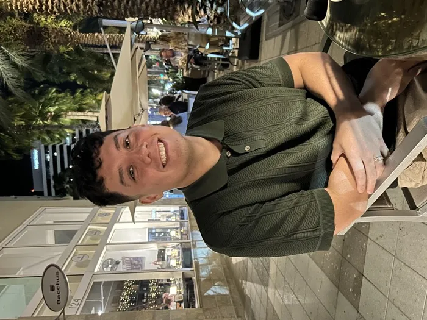

Currently a Senior Design Engineer at Lockheed Martin, Patrick leads the creation of immersive AR training experiences that change how aircraft maintenance is performed. His role is uniquely multi-faceted, combining technical development with client-facing leadership. Patrick serves as a subject matter expert for Tanit XR, navigating them through product capabilities, answering technical queries, and designing the primary digital site that hosts Tanit’s archive. Patrick holds a Master’s in Digital Arts & Sciences from the University of Florida and currently resides in the Tampa Bay Area with his wife and two dogs.
Appuyez sur Voir en 3D sur un modèle pour l’explorer ici même.